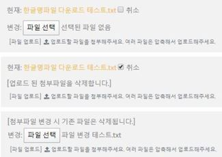

view에서 delete() 메소드가 호출되면 업로드 파일의 유무를 체크한 후 파일의 path경로와 일치하는 MEDIA_ROOT의 파일을 삭제합니다.
2. 글 수정 시 media파일 동시 수정 구현
우선 기본적인 구현 방법은 FileField에 변경된 파일이 있거나 업로드된 파일을 취소할 시, 기존에 업로드되어 있던 파일은 앞서 오버라이딩한 delete() 메소드로 삭제하고 새로운 파일이 있다면 그 파일을 업로드 하도록 구현합니다.
글수정 view인 notice_edit_view에 POST요청이 들어왔을 시 확인해야할 사항은 사용자가 기존에 첨부한 파일을 업로드 취소하였을 경우와 사용자가 첨부파일을 변경하였을 경우 총 2가지입니다. 이 2가지를 클라이언트에서 처리하여 POST로 요청된 경우 둘 중 하나라도 전달되면 delete() 메소드를 수행합니다. 아래와 같이 views.py의 글수정 view인 notice_edit_view를 수정합니다.
if file_check or file_change_check: os.remove(os.path.join(settings.MEDIA_ROOT, notice.upload_files.path))
form = NoticeWriteForm(request.POST, request.FILES, instance=notice) if form.is_valid(): notice = form.save(commit = False) if request.FILES: if 'upload_files' in request.FILES.keys(): notice.filename = request.FILES['upload_files'].name notice.save() messages.success(request, "수정되었습니다.") return redirect('/notice/'+str(pk)) else: notice = Notice.objects.get(id=pk) if notice.writer == request.user or request.user.level == '0': form = NoticeWriteForm(instance=notice) context = { 'form': form, 'edit': '수정하기', } if notice.filename and notice.upload_files: context['filename'] = notice.filename context['file_url'] = notice.upload_files.url return render(request, "notice/notice_write.html", context) else: messages.error(request, "본인 게시글이 아닙니다.") return redirect('/notice/'+str(pk))
file_change_check로 템플릿에서 업로드 파일이 변경되었는지를 확인하고 file_check로 기존의 파일을 사용자가 취소했는지 확인합니다.두가지 경우 하나라도 전달되었을 경우 MEDIA_ROOT의 파일을 삭제하고 현재 request.FILES을 확인하여 다시 파일명과 파일을 저장합니다.
GET메소드로 클라이언트에 글 수정 템플릿을 뿌려줄 때 기존에 암호화되어 저장되있는 파일을 원본 파일명으로 출력하기 위해 filename과 file_url을 context에 담아 전달합니다.
3. 글 수정 템플릿 수정
방금 글쓰기 view에서 구현한 file_change_check를 전달하기 위해 notice_wirte.html의 form태그 안에 FileField가 변경되었을 시 checkbox가 checked되는 input태그를 추가합니다. display를 none으로 설정하여 보여지지 않게 하고 view에서 전달받을 수 있도록 지정한 fileChange란 name속성을 추가합니다.
{% if filename %} <script type = "text/javascript"> $('[href="{{ file_url }}"]').html("{{ filename }}"); $('#upload_files-clear_id').css({opacity:'100', position:'relative', 'pointer-events':'auto'})
$("#id_upload_files").change(function() { if ($('#id_upload_files').get(0).files.length == 1) { $(".col-sm-12").contents().get(0).nodeValue = '[첨부파일 변경 시 기존 파일은 삭제됩니다.]' $('#upload_files-clear_id').attr("checked", false) $('#upload_files-clear_id').prev().hide() $('#upload_files-clear_id').next().hide() $('#upload_files-clear_id').hide() } });
글 수정 템플릿에서 FileField로 생성한 업로드파일 취소 input태그의 id는 ‘필드명-clear_id‘ 로 지정됩니다. 따라서 기존의 암호화 되어있는 파일명은 opacity 속성을 추가해주어 투명도를 주고, view에서 context로 전달받은 filename과 file_url을 사용하여 원본파일명으로 표시되도록 구현합니다.
그리고 FileField로 생성된 타입이 File인 input태그의 id는 ‘id_필드명‘ 이므로 change 메소드로 input 태그의 변동사항을 확인하고, file 또한 존재할시 display=none으로 설정해둔 fileChangeCheck를 checked하여 view에 전달합니다. 스크립트가 잘 적용되었을 시 아래와 같은 결과를 확인하실 수 있습니다.

4. URL경로 입력 media 파일 접근 제한
URL로 MEDIA_ROOT에 접근하여 강제적으로 파일을 다운, 이미지파일 등에 접근하는 것을 방지하기 위해 urls.py에 아래와 같이 소스를 추가합니다.
1 2 3 4 5 6 7 8 9 10 11 12
# notice/urls.py
from django.conf import settings from django.conf.urls.static import static from django.contrib import messages from django.shortcuts import redirect